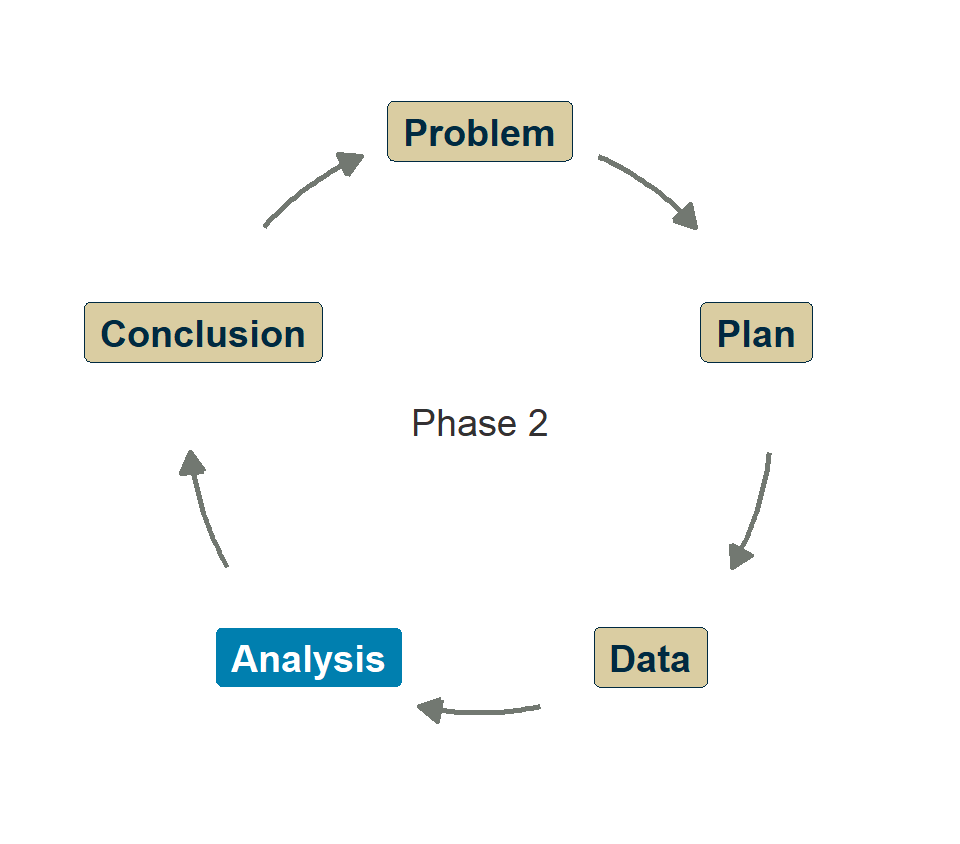
Comparing groups
Research Skills — Week 8
Today's exercises
Bias bingo
11:08
Bias bingo
💬 Homework recap
- Recap
- One tail or two?
- Multiple t-tests?
- ANOVA
- Is that a big difference?
- Run an ANOVA
- Which pairs differ?
- Which pairs? Your turn
- How big?
- Wrap-up
How did you do?
11:08
The Economist, 23 September 2026: “Many surgical interventions are little better than placebo”.
Selection bias [3]
Survivorship bias [3]
Confounding [1, 3, 5]
Correlation ≠ causation [5]
Control group [5]
Randomization [5]
Blinding
Placebo / nocebo [1]
Reporting bias
Base rate neglect [6]
Effect size [6]
Sample size [3]
Generalizability [3, 5]
Regression to the mean [5]
Confirmation bias [1]
“Compared to what?” [2]
Recap
11:05
- Bias bingo
Recap
- One tail or two?
- Multiple t-tests?
- ANOVA
- Is that a big difference?
- Run an ANOVA
- Which pairs differ?
- Which pairs? Your turn
- How big?
- Wrap-up
Where we are
11:05
Week 6: t-tests for two groups. Week 7: models.
Today: t-tests revisited. A tale of two tails, and many comparisons
Questions?
11:05

Submit questions:
PollEv.com/geol
text geol to 07480 781235
One tail or two?
11:18
- Bias bingo
- Recap
One tail or two?
🎓 Refresher
- Multiple t-tests?
- ANOVA
- Is that a big difference?
- Run an ANOVA
- Which pairs differ?
- Which pairs? Your turn
- How big?
- Wrap-up
One tail or two?
11:18
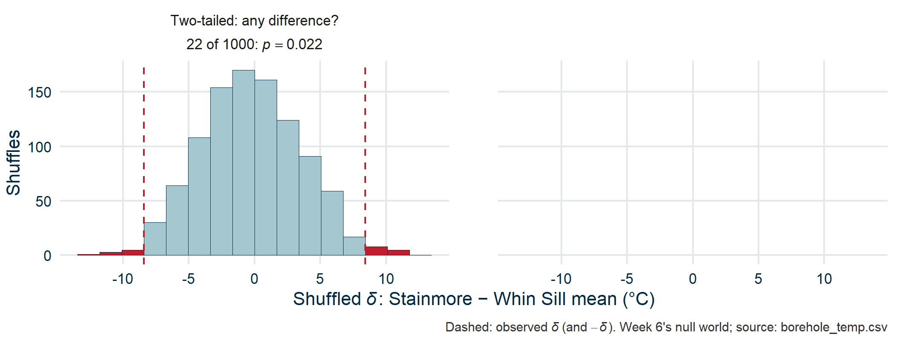
One tail or two?
11:18
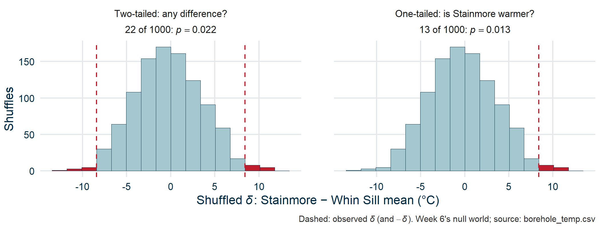
HolmesCo’s latest results
11:21
⚒️ HolmesCo
Geological Consultants Since 2019
“Ironing Out Your Problems”™
Iron Remediation Results
On the client’s request, we sampled upstream and downstream of each treated site, and tested a competitor’s product too.
- FerroGone: significant difference, p = 0.03
- ClearFlow: no significant difference, p = 0.07
FerroGone: the only proven choice.
Mine water: only better counts
11:23
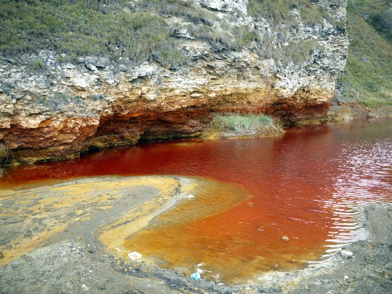
Pool stained with iron, Blast Beach, Seaham: Andrew Curtis / Geograph, CC BY-SA 2.0
Has iron fallen?
- If it doesn’t cut iron, it doesn’t work: if it increases iron I’m definitely not paying for it!
When only one direction is interesting: use a one-tailed test.
Define your question before you ask it.
A one-tailed test after a two-tailed test fails is a second test: and a second chance to see a false positive.
Multiple t-tests?
11:26
- Bias bingo
- Recap
- One tail or two?
Multiple t-tests?
🎓 Concept block 1
- ANOVA
- Is that a big difference?
- Run an ANOVA
- Which pairs differ?
- Which pairs? Your turn
- How big?
- Wrap-up
Toss a coin
11:26
Everyone: toss a coin 6 times. Note heads or tails each time.
Is your coin fair? What would make you say it isn’t?
Is your coin fair?
11:28
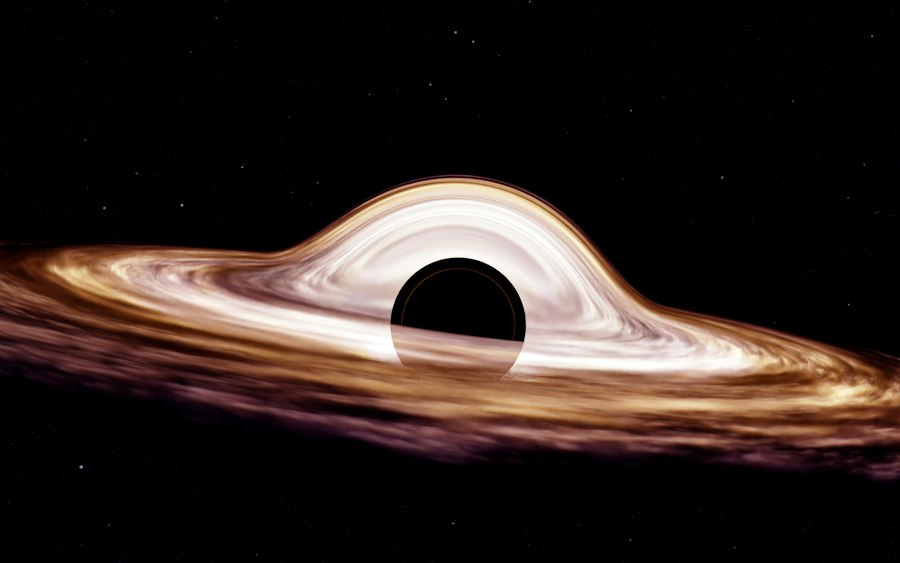
Black hole and accretion disk: BoliviaInteligente / Unsplash, Unsplash Licence
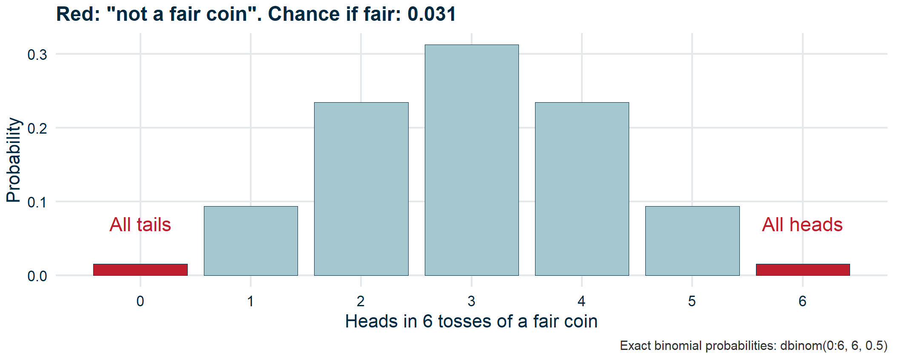
If all six came out the same: your coin is biased, p < 0.05.
Expecting false positives
11:31
Each of you just tested a hypothesis on a fair coin.
Null hypothesis: Coin is fair
Null hypothesis is rejected (p = 0.031) if all flips landed the same
~70 tests × 0.031: we expected about 2 false positives.
Run enough tests and some will be “significant”, even when nothing is going on.
11:33
⚒️ HolmesCo
Geological Consultants Since 2019
“Leave No Stone Untested”™
Press Release — Multi-Element Anomaly Discovered!
“We tested soil samples from 20 sites for enrichment in each of 20 rare earth elements. We found statistically significant enrichment (p < 0.05) for three elements at one site!”
If there’s truly nothing there, how many significant results would you expect by chance?
The answer
11:36
20 × 20 = 400 tests at p = 0.05
Expected false positives: 20, about one per site.
In the null world (no elements enriched), there’s a ~4 in 5 chance that three samples will test as “enriched” in at least one site.
ANOVA
11:38
- Bias bingo
- Recap
- One tail or two?
- Multiple t-tests?
ANOVA
🎓💻 Concept block 2
- Is that a big difference?
- Run an ANOVA
- Which pairs differ?
- Which pairs? Your turn
- How big?
- Wrap-up
One test for multiple groups
11:38
ANOVA (Analysis of Variance) asks:
“Does any group differ from the others?”
Plotting a comparison
11:38
Expect Best, Pexels
Capacity factor at 25 wind farms in each of four regions.
What does each plot show? What does it hide?
Bar chart of means | geom_col()
11:39
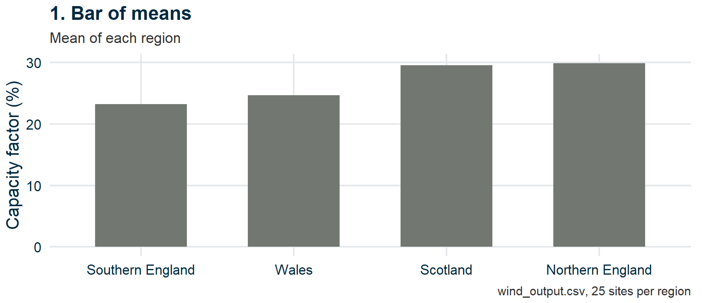
Shows the data Explains the data Facilitates comparison
Box plot | geom_boxplot()
11:39
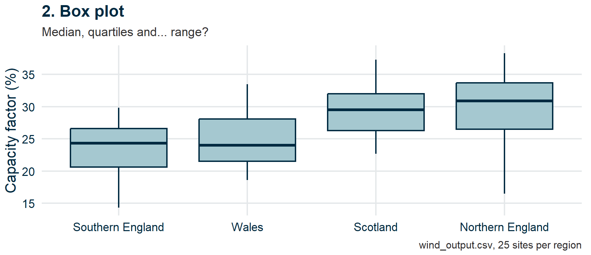
Shows the data Explains the data Facilitates comparison
Notched box plot | geom_boxplot(notch = TRUE)
11:40
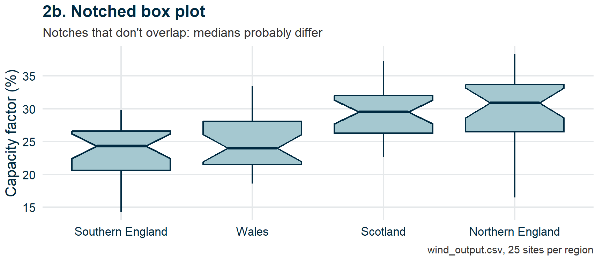
Shows the data Explains the data Facilitates comparison
Sites, mean and confidence interval
11:41
geom_jitter() + geom_errorbar() + geom_point()
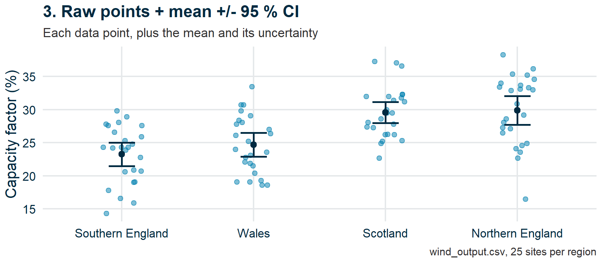
Shows the data Explains the data Facilitates comparison
Raincloud
11:42
geom_jitter() + geom_pointrange() + ggdist::stat_slab()
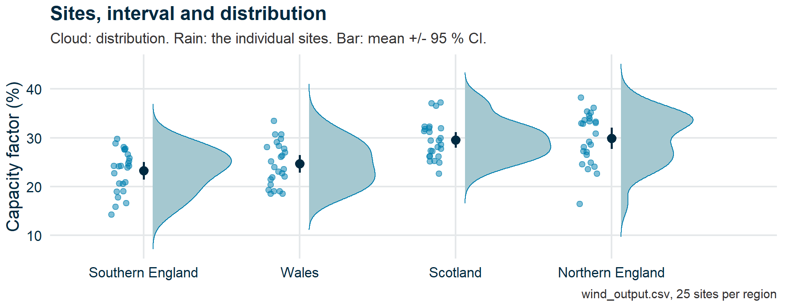
w08-groups-raincloud.R · after Heiss (2026)
Shows the data Explains the data Facilitates comparison
Raincloud, coloured
11:42
geom_jitter() + geom_pointrange() + ggdist::stat_slab()
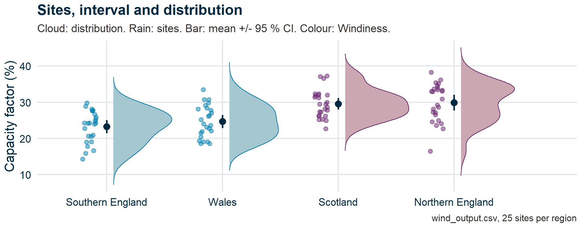
w08-groups-raincloud-pair.R · after Heiss (2026)
Shows the data Explains the data Facilitates comparison
Is that a big difference?
11:43
- Bias bingo
- Recap
- One tail or two?
- Multiple t-tests?
- ANOVA
Is that a big difference?
🎓💻 Concept block 2
- Run an ANOVA
- Which pairs differ?
- Which pairs? Your turn
- How big?
- Wrap-up
Compared to what?
11:43
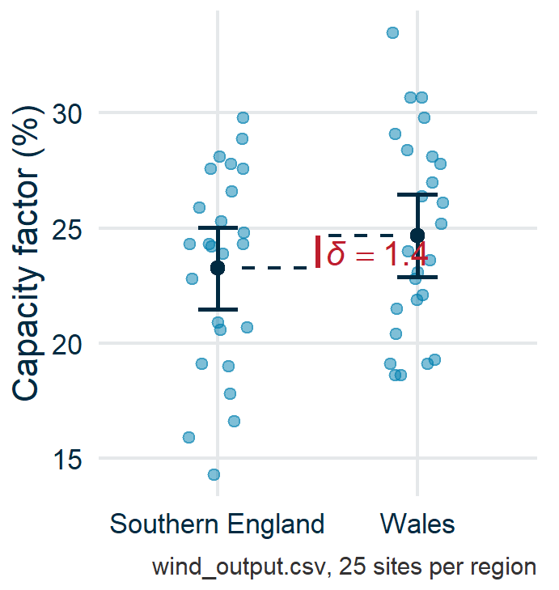
Welsh sites average δ = 1.4 percentage points more capacity factor.
| Divide δ by | Gives | Answers |
|---|---|---|
| null world: SE = 1.2 | t = 1.2 | How sure? |
| spread of sites: SD = 4.3 | d = 0.33 | How big? |
More sites shrink the SE, not the SD.
Taking more measurements:
11:49
With the same means and spread, as you measure more sites per region, the same size difference becomes less likely by chance
| Sites per region | SE | t | p | d |
|---|---|---|---|---|
| 25 | 1.23 | 1.2 | 0.25 | 0.33 |
| 100 | 0.61 | 2.3 | 0.02 | 0.33 |
| 400 | 0.31 | 4.7 | < 0.001 | 0.33 |
Significance asks: Do you have enough data to detect a difference this small?
d asks: Is the difference big, relative to other variation?
What d looks like
11:52
Cohen’s rule of thumb: 0.2 small, 0.5 medium, 0.8 large.
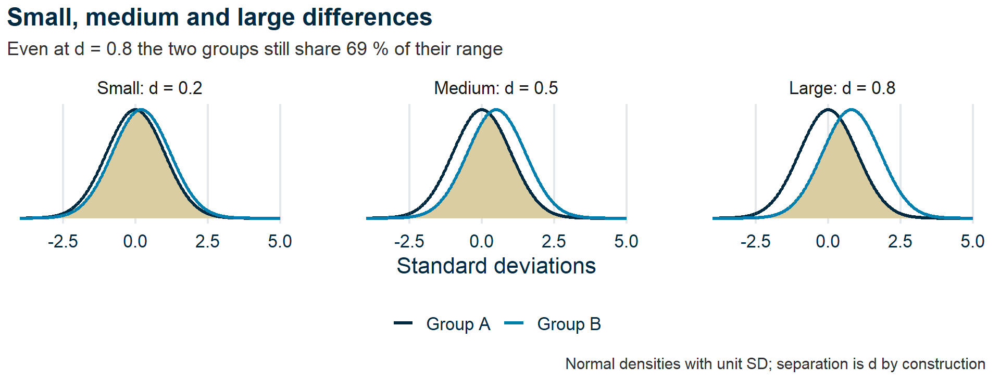
From δ to F
11:54
Compare two groups and get one δ
(δ = the difference between the means).
Compare four groups and get six δs… 🤔
One number instead:
\[F = \frac{\text{spread between means}}{\text{spread between sites within a group}}\]
t asks “Is this δ noteworthy”?
F asks “Are these δs, taken together, noteworthy?”
More scatter, less confidence
11:57
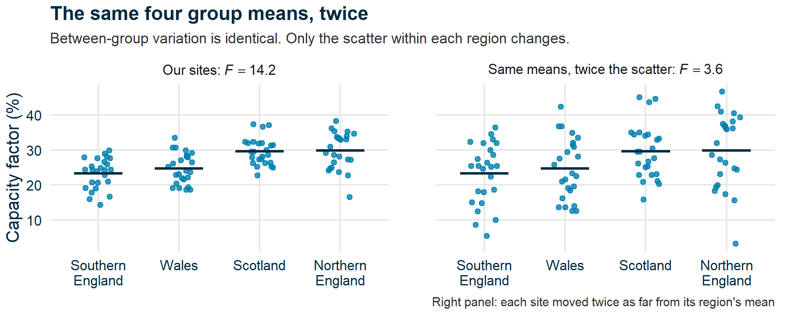
aov(): one test for four groups
12:00
Same formula as t.test(): outcome ~ group.
My data: the right-hand panel. Same means, twice the scatter.
Run an ANOVA
12:03
- Bias bingo
- Recap
- One tail or two?
- Multiple t-tests?
- ANOVA
- Is that a big difference?
Run an ANOVA
✏️💻 Exercise 2
- Which pairs differ?
- Which pairs? Your turn
- How big?
- Wrap-up
Your turn
12:03
Exercise 2 on the exercise page: the same ANOVA, on the real wind sites (wind_output.csv).
Is your F bigger or smaller than mine? Your p?
Reading the output
12:10
HolmesCo data: twice the scatter Df Sum Sq Mean Sq F value Pr(>F)
region 3 858 285.86 3.553 0.0173
Residuals 96 7724 80.46
Yours: the real sites Df Sum Sq Mean Sq F value Pr(>F)
region 3 857.6 285.86 14.21 9.76e-08
Residuals 96 1931.1 20.12 - Mean Sq,
region: how far the regional means spread (summarizing δs). Same in both. - Mean Sq,
Residuals: spread ‘left-over’ after accounting for region. Four times bigger in HolmesCo’s. - F value:
region÷Residuals. 3.6 against 14.2. - Pr(>F): the chance of an F this big if region made no difference. 0.017 against 9.8 × 10⁻⁸.
What ANOVA doesn’t tell you
12:13
F = 14.2, p < 0.001: at least one region differs.
Which? By how much? ANOVA doesn’t say.
Next: test each pairs, but raise the bar for each one.
Which pairs differ?
12:16
- Bias bingo
- Recap
- One tail or two?
- Multiple t-tests?
- ANOVA
- Is that a big difference?
- Run an ANOVA
Which pairs differ?
🎓💻 Concept block 3
- Which pairs? Your turn
- How big?
- Wrap-up
Option 1: Tukey’s HSD
12:16
When: after an ANOVA, to compare every pair of groups.
Option 2: Bonferroni
12:20
The generalized (if slightly ad hoc) alternative, for any set of tests.
How: with k tests, each one needs p < 0.05 / k.
HolmesCo’s survey: 400 tests, so each needs p < 0.05 / 400 = 0.000125.
Not ideal: just raises the bar by a fixed fraction. With many tests, the bar gets high!
Tukey or Bonferroni?
12:24
| Tukey’s HSD | Bonferroni | |
|---|---|---|
| Use it for | Every pair of groups, after an ANOVA | Any set of k tests |
| Each test needs | p adj < 0.05 |
p < 0.05 / k |
Both raise the bar for each test, so the whole family keeps its 5 % chance of a (single) false positive.
Which pairs? Your turn
12:28
- Bias bingo
- Recap
- One tail or two?
- Multiple t-tests?
- ANOVA
- Is that a big difference?
- Run an ANOVA
- Which pairs differ?
Which pairs? Your turn
✏️💻 Exercise 3
- How big?
- Wrap-up
Your turn
12:28
Exercise 3 on the exercise page:
TukeyHSD()on your fit from Exercise 2- Which pairs differ?
- By how much?
How big?
12:31
- Bias bingo
- Recap
- One tail or two?
- Multiple t-tests?
- ANOVA
- Is that a big difference?
- Run an ANOVA
- Which pairs differ?
- Which pairs? Your turn
How big?
🎓 Concept block 4
- Wrap-up
Compared to what? (redux)
12:31

Welsh sites average δ = 1.4 points more capacity factor.
| Divide δ by | Gives | Answers |
|---|---|---|
| null world: SE = 1.2 | t = 1.2 | How sure? |
| spread of sites: SD = 4.3 | d = 0.33 | How big? |
For ANOVA: η² (eta-squared)
12:34
t-test: d. Linear model: R². ANOVA: η², the share of the variation explained by the groups.
\[\eta^2 = \frac{\texttt{Sum Sq}\ \texttt{region}}{\texttt{Sum Sq}\ \texttt{region} + \texttt{Sum Sq}\ \texttt{Residuals}}\]
Mine: 857.6 / (857.6 + 7724.4) = 0.10
| η² | Interpretation |
|---|---|
| 0.01 | Small |
| 0.06 | Medium |
| 0.14 | Large |
Always report both the p-value and an effect size.
“Is it real?” → “how big?” (→ “do I care?”)
Wrap-up
12:36
- Bias bingo
- Recap
- One tail or two?
- Multiple t-tests?
- ANOVA
- Is that a big difference?
- Run an ANOVA
- Which pairs differ?
- Which pairs? Your turn
- How big?
Wrap-up
Key points
12:36
- Multiple tests inflate false positives — correct for them
- ANOVA compares multiple groups in one test; TukeyHSD finds which differ
- t and F say how sure; d and η² say how big. Report both
- η² is R² for groups: how much of the variation they explain
Any questions we missed?
12:36
Submit questions:
PollEv.com/geol
text geol to 07480 781235
Next time
12:37
Application session: “Deepening your analysis”
How big is the regional difference? Then: your project’s question, test and effect size.
Suggested reading
12:37
- Krzywinski & Altman, “Comparing samples—part II”, Nature Methods (2014). Reading list
- Krzywinski & Altman, “Analysis of variance and blocking”, Nature Methods (2014). Reading list
Attendance
12:37
New login? Drag Attendance QR to the favourites bar.